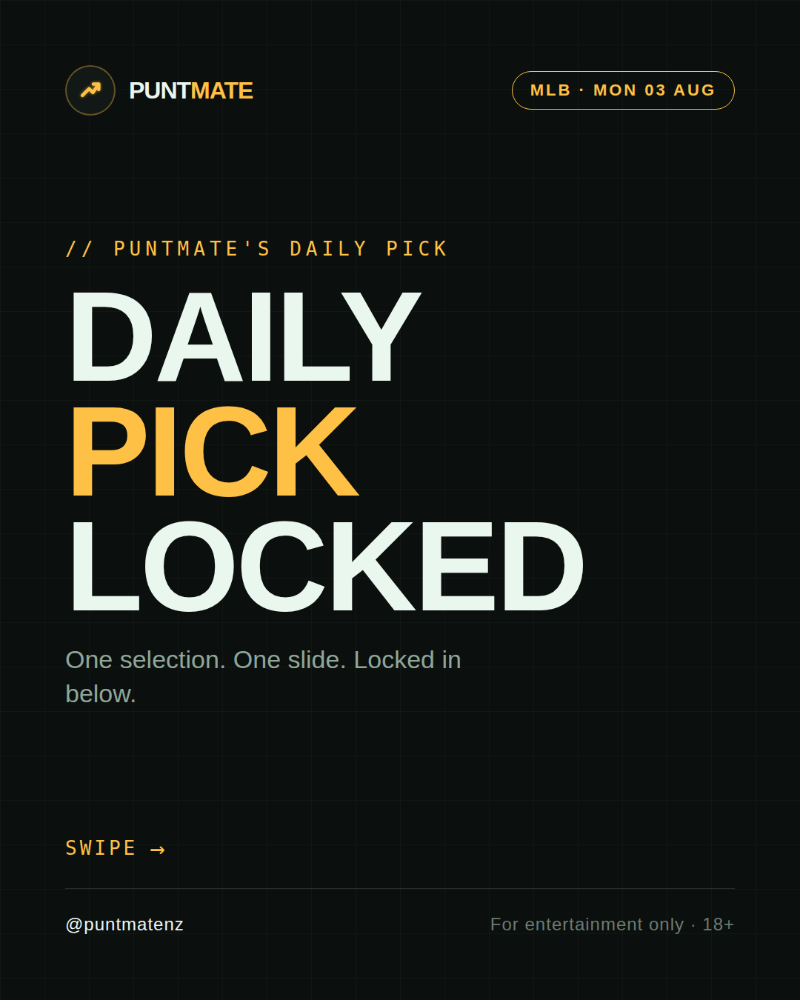
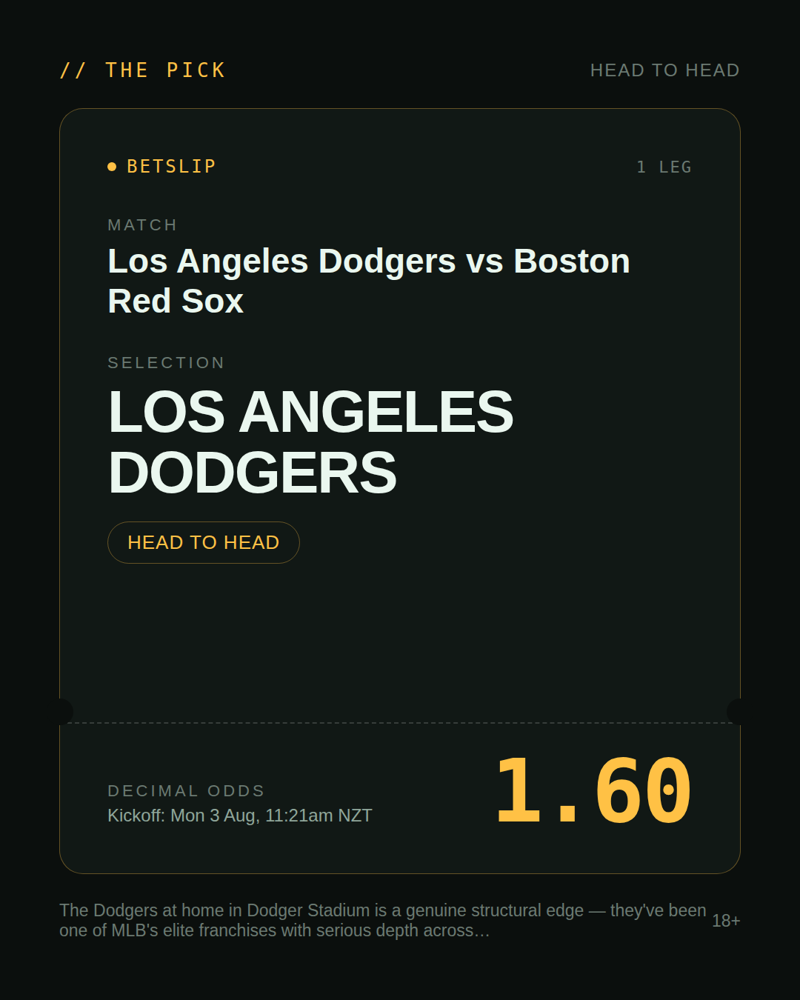
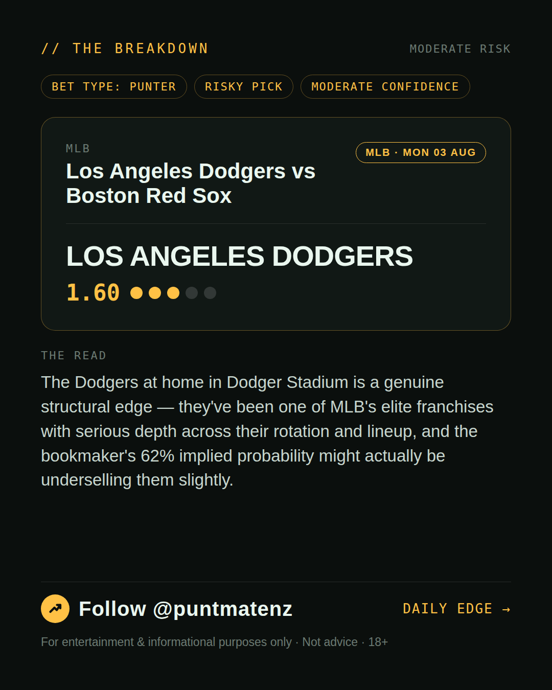
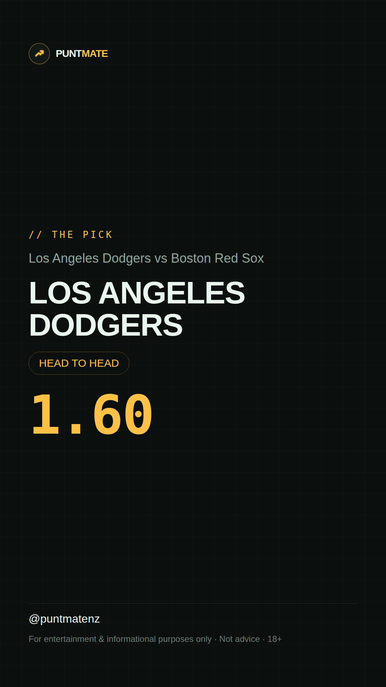

*🎯 PUNTMATE NZ — MLB* 🏟 Los Angeles Dodgers vs Boston Red Sox *PICK:* LOS ANGELES DODGERS *ODDS:* 1.60 (Head to Head) *BET TYPE: PUNTER* _The Dodgers at home in Dodger Stadium is a genuine structural edge — they've been one of MLB's elite franchises with serious depth across their rotation and lineup, and the bookmaker's 62% implied probability might actually be underselling them slightly._ ────────────────── 📲 Join Telegram for daily picks ⚠️ For entertainment & informational purposes only. Not advice. 18+.
🎯 MLB — Los Angeles Dodgers vs Boston Red Sox LOS ANGELES DODGERS @ 1.60 (Head to Head) BET TYPE: PUNTER Solid touch here. Not a lock, but the value's real and the form backs it up. The Dodgers at home in Dodger Stadium is a genuine structural edge — they've been one of MLB's elite franchises with serious depth across their rotation and lineup, and the bookmaker's 62% implied probability might actually be underselling them slightly. Follow for daily value picks → @puntmatenz ⚠️ For entertainment & informational purposes only. Not advice. 18+. #PuntmateNZ #SportsBetting #NZTAB #MLB
| has_pick | True |
| pick_id | 2026-08-02_Los_Angeles_Dodgers_vs_Boston_Red_Sox |
| run_id | 30766932984 |
| generated_at | 2026-08-02T21:02:30.933036+00:00 |
| post_date | 2026-08-02 |
| match | Los Angeles Dodgers vs Boston Red Sox |
| sport | baseball_mlb |
| sport_label | MLB |
| market | Head to Head |
| selection | LOS ANGELES DODGERS |
| odds | 1.60 |
| bet_type | PUNTER_BET |
| bet_type_label | BET TYPE: PUNTER |
| bet_type_reason | Solid touch here. Not a lock, but the value's real and the form backs it up. The Dodgers at home in Dodger Stadium is a genuine structural edge — they've been one of MLB's elite franchises with serious depth across their rotation and lineup, and the bookmaker's 62% implied probability might actually be underselling them slightly. |
| classification | RISKY_PICK |
| risk | RISKY_PICK |
| confidence | MODERATE |
| confidence_label | MODERATE |
| final_explanation | The Dodgers at home in Dodger Stadium is a genuine structural edge — they've been one of MLB's elite franchises with serious depth across their rotation and lineup, and the bookmaker's 62% implied probability might actually be underselling them slightly. |
| public_caution | Keep this one light — the value's there but so is the uncertainty. |
| theme | night |
| carousel_paths | ['data/review/2026-08-02_Los_Angeles_Dodgers_vs_Boston_Red_Sox/cover.png', 'data/review/2026-08-02_Los_Angeles_Dodgers_vs_Boston_Red_Sox/tip.png', 'data/review/2026-08-02_Los_Angeles_Dodgers_vs_Boston_Red_Sox/breakdown.png'] |
| carousel_urls | ['https://raw.githubusercontent.com/kingofthecastle24/puntmate/main/data/cards/2026-08-02_Los_Angeles_Dodgers_vs_Boston_Red_Sox_night_1_cover.png', 'https://raw.githubusercontent.com/kingofthecastle24/puntmate/main/data/cards/2026-08-02_Los_Angeles_Dodgers_vs_Boston_Red_Sox_night_2_tip.png', 'https://raw.githubusercontent.com/kingofthecastle24/puntmate/main/data/cards/2026-08-02_Los_Angeles_Dodgers_vs_Boston_Red_Sox_night_3_breakdown.png'] |
| story_path | data/review/2026-08-02_Los_Angeles_Dodgers_vs_Boston_Red_Sox/story.png |
| story_url | https://raw.githubusercontent.com/kingofthecastle24/puntmate/main/data/cards/2026-08-02_Los_Angeles_Dodgers_vs_Boston_Red_Sox_night_story.png |
| intended_platforms | ['telegram', 'instagram_feed', 'instagram_story', 'facebook'] |
| workflow_state | GENERATED |
| has_punter_multi | False |
| has_gambler_multi | False |
| has_degenerate_multi | False |